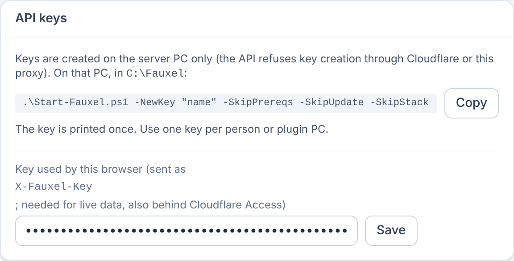
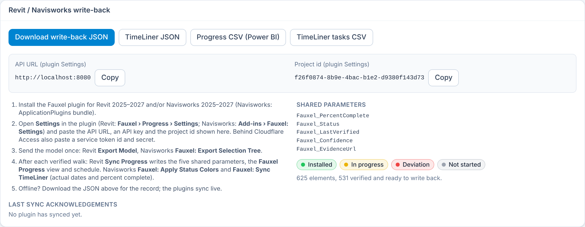
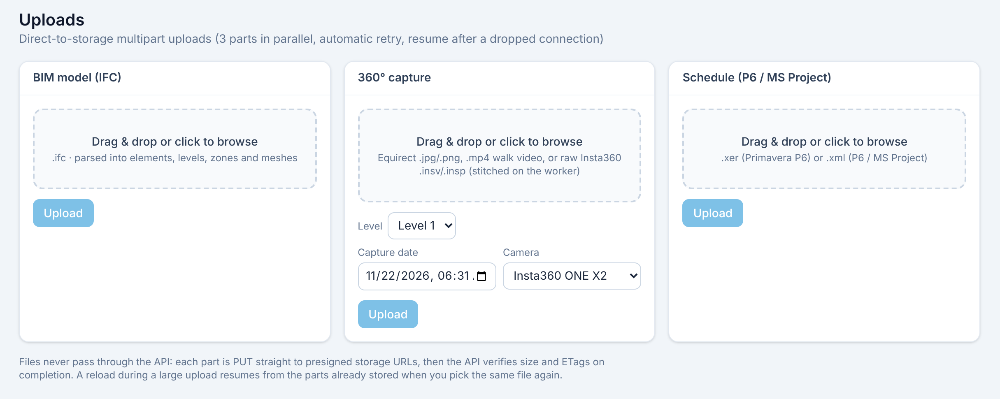
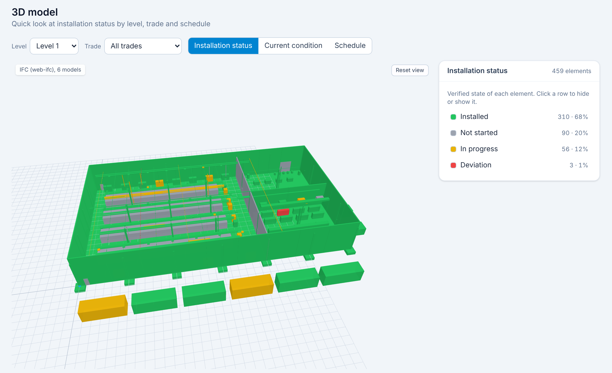
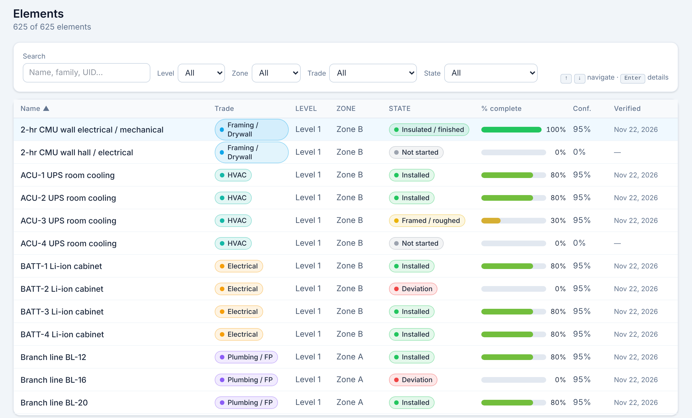

Every pick and click to connect the Fauxel plugins to your model, push files to the platform, and get verified field progress back into Navisworks and Revit. Works on the server PC or anywhere through fauxel.ackerworks.com.
0 How it fits together & what you need
1 Install the plugins
2 Find your API key, project id & URL
3 Cloudflare service token (remote use)
4 Connect Navisworks and Revit
5 Send the model to Fauxel
6 Upload the schedule and 360° walks
7 Review progress in the portal
8 Push progress into Navisworks
9 Push progress into Revit
10 Weekly routine & troubleshooting
A Reference: files, colors, commands
Revit 2025–2027 · Navisworks Manage/Simulate 2025–2027Fauxel 0.1 · November 2026
0
Overview
How it fits together
Fauxel runs on one Windows PC (the server PC). The website and the plugins reach it either directly on that PC, or from anywhere through Cloudflare at fauxel.ackerworks.com.
What you need before you start
Item
Used for
Where to find it
API URL
Plugin Settings
Localhttp://localhost:8000Remotehttps://fauxel.ackerworks.com Also shown with a Copy button in the portal: Integrations›Revit / Navisworks write-back.
API key
Plugins, browser
Printed at the end of Start-Fauxel.ps1 and saved in %APPDATA%\Fauxel\settings.json on the server PC. New key for someone else: step 2.
Project id
Plugin Settings
Portal Integrations›write-back card›Project id›Copy, or the long id in the address bar: /p/<project id>/…
Access id + secret
Plugins (remote only)
Cloudflare service token fauxel-clients: Zero Trust›Access controls›Service credentials›Service Tokens (step 3).
Files
Uploads
Discipline IFCs or the Revit/Navisworks model, a P6 .xer/.xml or MS Project .xml, and 360° walks from the ONE X2 (.insv/.insp or Studio exports).
Local or remote? Use Local values when Revit or Navisworks runs on the server PC. Use Remote values on any other computer. The plugins read the same settings file, so you set it once per computer for both apps.
1
One time per computer
Install the plugins
Close Revit and Navisworks first. One install covers 2025, 2026 and 2027.
On the server PC
Open PowerShell in C:\Fauxel.
Run powershell -ExecutionPolicy Bypass -File .\Start-Fauxel.ps1
Wait for Plugin build OK in the summary. Both plugins are built and installed, and settings.json is already filled in.
On any other PC
From the server PC, copy these two folders to the same place on the other PC:
%APPDATA%\Autodesk\ApplicationPlugins\Fauxel.bundle %APPDATA%\Autodesk\Revit\Addins\<year>\Fauxel and Fauxel.addin next to it
Paste %APPDATA% into the Explorer address bar to open the folder.
Then go to step 2 for a key of its own.
Check Navisworks Illustration
Open Navisworks, click the Add-ins tab. Five Fauxel buttons sit in the Tool Add-ins 1 panel.
Home
Viewpoint
Review
Animation
View
Output
Render
Add-ins
Fauxel: Settings
Fauxel: Export Selection Tree
Fauxel: Sync TimeLiner
Tool Add-ins 1
Fauxel: Apply Status Colors
Fauxel: Reset Colors
Check Revit Illustration
Open Revit. If a Security – Unsigned Add-In prompt appears, click Always Load. A Fauxel tab with a Progress panel appears.
File
Architecture
Structure
Systems
Insert
Annotate
View
Manage
Add-Ins
Fauxel
⚙
Settings
↑
Export Model
↓
Sync Progress
✕
Clear Overrides
Progress
Buttons missing? The bundle must sit in %APPDATA%\Autodesk\ApplicationPlugins\Fauxel.bundle. Navisworks 2027 no longer reads the old Plugins folder. For Revit, check that Fauxel.addin is in the folder for your Revit year.
2
Connection details
Find your API key, project id & URL
API key
Server PC: the key is already in %APPDATA%\Fauxel\settings.json ("api_key") and printed at the end of every Start-Fauxel.ps1 run.
Someone else or another PC: on the server PC, in C:\Fauxel, run .\Start-Fauxel.ps1 -NewKey "Jane laptop" -SkipPrereqs -SkipUpdate -SkipStack
Copy the key it prints. It is shown once, so paste it straight into the plugin Settings or a password manager.
In the portal, open Integrations›API keys, paste the key in Key used by this browser, click Save.

Integrations › API keys. Keys are created only on the server PC; the API refuses key creation through Cloudflare.
API URL and project id
In the portal, pick the project in the top bar, then click Integrations in the left menu.
In the Revit / Navisworks write-back card, click Copy next to Project id (and API URL when you are on fauxel.ackerworks.com).

Integrations › Revit / Navisworks write-back: API URL and project id with Copy buttons, the five shared parameters, and the download buttons used in step 8.
3
Remote only, once per company
Cloudflare service token for the plugins
fauxel.ackerworks.com sits behind Cloudflare Access. People sign in with their email; the plugins can't, so they send a service token instead. Skip this step for local use on the server PC.
Go to dash.cloudflare.com and sign in. Click Zero Trust›Access controls›Service credentials›Service Tokens.
Click Create Service Token. Name it fauxel-clients, duration 1 year (or longer), then Generate token.
Copy the Client ID and the Client Secret. The secret is shown only once.
Go to Access controls›Applications, open Fauxel portal (fauxel.ackerworks.com), then Policies.
Click Add a policy: Name Plugins, Action Service Auth, Include Service Token = fauxel-clients. Click Save.
Give the Client ID and Secret only to people who need the plugins. They go into the Access id and Access secret fields in step 4.
Fauxel portal › Policies › Add a policy Illustration
Plugins
Service Auth
Include
Service Token
fauxel-clients
Save
Keep the order. Your own email policy (Allow) stays. Do not add an Allow Everyone or Bypass policy to the portal unless you mean to share it publicly (that needs -PublicToday, see the reference page).
Already set up? If Start-Fauxel.ps1 -Cloudflare was run, the token fauxel-clients already exists. You can't view an old secret again. Click Rotate on the token to get a new secret (then update every plugin), or Refresh to extend its expiry.
4
Once per computer
Connect Navisworks and Revit
Open the Settings window:
Navisworks Add-ins›Fauxel: Settings Revit Fauxel›Progress›Settings
Fill in the fields from the table below.
Click Test connection. Wait for Connected … Project found.
Click Save. Both apps now use these values (%APPDATA%\Fauxel\settings.json).
Fauxel Settings✕
https://fauxel.ackerworks.com
••••••••••••••••••••••••
f26f0874-8b9e-4bac-b1e2-…
3a1c…access
••••••••••••••••••••••••
Test connection
Connected. API status: ok, db: True, storage: True. Project found.
SaveCancel
Illustration
Field
Local on the server PC
Remote any other computer
API URL
http://localhost:8000
https://fauxel.ackerworks.com
API key
The key from settings.json (already set by Start-Fauxel.ps1)
Your own key from -NewKey (step 2)
Project id
Integrations › write-back card › Project id › Copy. One project per job; change it here to work on another job.
Access id
leave empty
Service token Client ID (step 3)
Access secret
leave empty
Service token Client Secret (step 3)
Good to know. The API URL may include or leave out /api/v1; the plugin adds it. Settings are per Windows user, and the API key is stored as plain text in that file, so use one key per person and revoke it when they leave.
5
Each new model or major revision
Send the model to Fauxel
Pick one source per discipline so elements are not loaded twice.
A · Navisworks
Federated NWF/NWD with every discipline's NWC appended. Best for coordination-driven jobs.
B · Revit
Straight from the authoring model. Needed for shared-parameter write-back to that RVT.
C · IFC upload
Discipline IFCs in the portal. No Autodesk license needed; the 3D page shows the IFC geometry.
A · Export from Navisworks
Open the federated model. Make sure every discipline is appended (Home›Append).
Click Add-ins›Fauxel: Export Selection Tree. The whole model is sent, hidden items included.
Wait for Exported N elements on M levels. Levels come from each item's Element › Level property, or from the layer it sits on.
B · Export from Revit
Set the model's shared coordinates first (Manage›Coordinates). Fauxel stores elements in the shared frame.
Click Fauxel›Progress›Export Model.
Wait for Exported N elements on M levels from "model name". Structure, architecture, ducts, pipes, sprinklers, cable tray, conduit, electrical and lighting categories are included.
C · Upload IFC in the portal
Click Uploads. In BIM model (IFC) drag one discipline .ifc in, click Upload.
Repeat per discipline (A, S, M, E, P, FP). Uploading the same file name again makes a new version; the 3D page always shows the latest version of each.
One element, one id. Fauxel matches elements by Revit UniqueId, IFC GlobalId or Navisworks item GUID. Elements exported from Revit, or from Revit NWCs in Navisworks, carry the Revit UniqueId, so progress can later go back to Revit too.
6
Each schedule update and each walk
Upload the schedule and 360° walks

Uploads page: model, 360° capture and schedule cards. Large files go straight to storage in parts and resume after a dropped connection.
Schedule
Export from P6 as .xer (or P6 / MS Project .xml).
In Schedule (P6 / MS Project) drop the file, click Upload.
Open Schedule & EVM to check activities show up.
360° walk
Copy the walk from the ONE X2 (.insv/.insp, or Insta360 Studio JPG/MP4).
In 360° capture pick the Level, check the Capture date and Camera, drop the files, click Upload.
Or on the server PC: .\Start-Fauxel.ps1 -Capture D:\DCIM\Camera01
How activities link to elements
Fauxel reads each activity name for a location and a trade. Name activities so both are in the text:
Put in the name
Examples that work
Level (matches level names)
Level 2, L2, Roof
Zone as Zone X or Area X (matches space/room names)
Level 1 Zone A …: zone and level must both match
Trade keyword
Structural: structural, concrete, steel, slab, column, footing, foundation, rebar, pour · Arch: framing, stud, drywall, partition, ceiling, door, paint, finish, flooring · HVAC: duct, HVAC, mechanical, VAV, AHU, chiller · Electrical: electrical, lighting, conduit, wire, cable, switchgear, transformer · Plumbing/FP: plumbing, pipe, piping, sprinkler, fire protection. The first match wins, in that order: plumbing/FP, HVAC, electrical, then the rest.
Example: Level 3 HVAC duct and VAV rough-in links to every HVAC element on Level 3. An activity with no level or zone links to every element of its trade.
7
After each walk
Review progress in the portal
Verification: confirm or correct anything the camera saw with less than 80% confidence. Only verified states are written back to the models.
3D model: pick a Level and Trade; switch between Installation status, Current condition and Schedule colors.
Elements: search by name or id, filter by level, zone, trade and state. Click a row for its evidence photos.
QC issues: deviations and pre-cover alerts to resolve before close-in.

3D model page: all six discipline IFCs loaded together, colored by verified status. Pick a level to see inside.

Elements page: the same values that go into the Fauxel_* parameters (state, percent complete, confidence, last verified).
8
After each review
Push progress into Navisworks
Color the model by verified status
Open the same federated model you exported in step 5.
Click Add-ins›Fauxel: Apply Status Colors.
Read Colored N elements (M not found in this model). Not started items also turn semi-transparent.
To undo, click Add-ins›Fauxel: Reset Colors. This clears all permanent color overrides in the file, including your own.
InstalledIn progressDeviationNot started
Write actual dates and % complete into TimeLiner
Fauxel finds each TimeLiner task by its Display ID or Synchronization ID (= the P6 Activity ID), or else by the same task name. Build the tasks once from Fauxel's own list so they always match:
Portal Integrations›write-back card›TimeLiner tasks CSV. Save fauxel-timeliner-tasks.csv.
Navisworks Home›TimeLiner›Data Sources›Add›CSV Import, pick the CSV.
In the Field Selector, check Row 1 contains headings and map the fields as shown, then OK.
Right-click the data source › Rebuild Task Hierarchy. Attach tasks to search sets or selections as you normally do.
Every time after: Add-ins›Fauxel: Sync TimeLiner. It lists each task it updated.
Field Selector Illustration
TimeLiner column
External field name
Synchronization ID
Activity ID
Task Name
Task Name
Display ID
Activity ID
Planned Start Date
Planned Start
Planned End Date
Planned End
Task Type
Task Type
Already linked to P6? If your TimeLiner tasks came from the same P6 schedule and their ID column holds the P6 Activity ID, skip the CSV and run Sync TimeLiner directly. If it reports 0 tasks updated, the IDs or names don't match: use the CSV.
9
After each review
Push progress into Revit
Workshared model? Synchronize with Central first, and make sure nobody else has the elements checked out. Fauxel can't edit elements owned by someone else.
Click Fauxel›Progress›Sync Progress.
Read Updated N elements (M not found in this model). It is one undo step.
Open the 3D view Fauxel Progress (colored by status) and the schedule Fauxel Progress Schedule in the Project Browser.
To remove the colors: Fauxel›Progress›Clear Overrides (only the Fauxel Progress view is touched).
What gets written
Five shared parameters, bound as instance parameters in the Data group on the tracked categories. The GUIDs are fixed, so filters, schedules and tags you build on them keep working in every model.
Parameter
Type
Example
Fauxel_PercentComplete
Number
80
Fauxel_Status
Text
INSTALLED
Fauxel_LastVerified
Text
2026-11-22T14:05:00+00:00
Fauxel_Confidence
Number
0.95
Fauxel_EvidenceUrl
URL
link to the photo
Status values: NOT_STARTED, FRAMED_OR_ROUGHED, INSTALLED, INSULATED_OR_FINISHED, DEVIATION_FLAGGED.
Where to see it Illustration
Properties
Duct · Rectangular Duct 900×450
Constraints
Reference Level
Level 2
Data
Fauxel_PercentComplete
80
Fauxel_Status
INSTALLED
Fauxel_LastVerified
2026-11-22T14:05:00+00:00
Fauxel_Confidence
0.95
Fauxel_EvidenceUrl
https://fauxel…
Navisworks too. Re-export the NWC after Sync Progress and the five values show up in Navisworks Properties, ready for search sets like "Fauxel_Status = DEVIATION_FLAGGED".
10
Keep it running
Weekly routine & troubleshooting
1 · Walk
ONE X2 walk per level. Upload in Uploads › 360° capture.
2 · Review
Clear the Verification queue, check QC issues.
3 · Sync
Revit Sync Progress, Navisworks Apply Status Colors + Sync TimeLiner.
When the design changes: re-export the model (step 5). When the schedule changes: re-upload the XER (step 6) and rebuild the TimeLiner tasks from a fresh CSV.
If something doesn't work
You see
Fix
"Fauxel API URL is missing or not an http(s) URL"
Open Settings, enter the API URL from step 4.
"Fauxel project id is missing"
Copy it from Integrations › write-back card (step 2).
"Cloudflare Access answered with its login page…"
Remote use needs the Access id and secret (step 3), and the Plugins Service Auth policy on the portal app.
401 · "missing or invalid credentials (X-Fauxel-Key)"
Wrong or old API key. Make a new one with -NewKey.
Test connection times out (local)
Docker Desktop not running. Run .\Start-Fauxel.ps1 -SkipPlugins on the server PC.
"No elements with geometry found."
Navisworks file has no geometry loaded: append the NWCs first.
"… (M not found in this model)" is high
The open model isn't the one you exported. Export it again (step 5), or open the right file.
Revit: "Nothing to write back yet: no verified elements."
No verified progress yet. Upload a walk and clear the Verification queue (steps 6–7).
TimeLiner: "already up to date (N tasks…)" but nothing changed
Task IDs/names don't match the schedule. Build tasks from the TimeLiner tasks CSV (step 8).
Portal shows "Demo mode" or empty lists
No key in this browser: Integrations › API keys › Key used by this browser › Save.
Fauxel buttons missing
Check the install paths in step 1; restart the app.
Need more? Full setup notes: docs/setup/quickstart.md in github.com/VDC-Austin-KA/Fauxel. Cloudflare Access details: infra/cloudflare/access-policy.md.